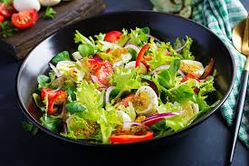

Salad

Description
A fresh and healthydish made from raw vegetables. It is light, nutritious, and often served
with olive oil or dressing.
Ingredients
- Lettuce
- Tomatoes
- Cucumber
- Olive oil
- Salt
Steps
- Wash all vegetables.
- Cut lettuce, tomatoes, and cucumber.
- Mix everything in a bowl.
- Add olive oil and salt.
- Toss and serve fresh.
Home